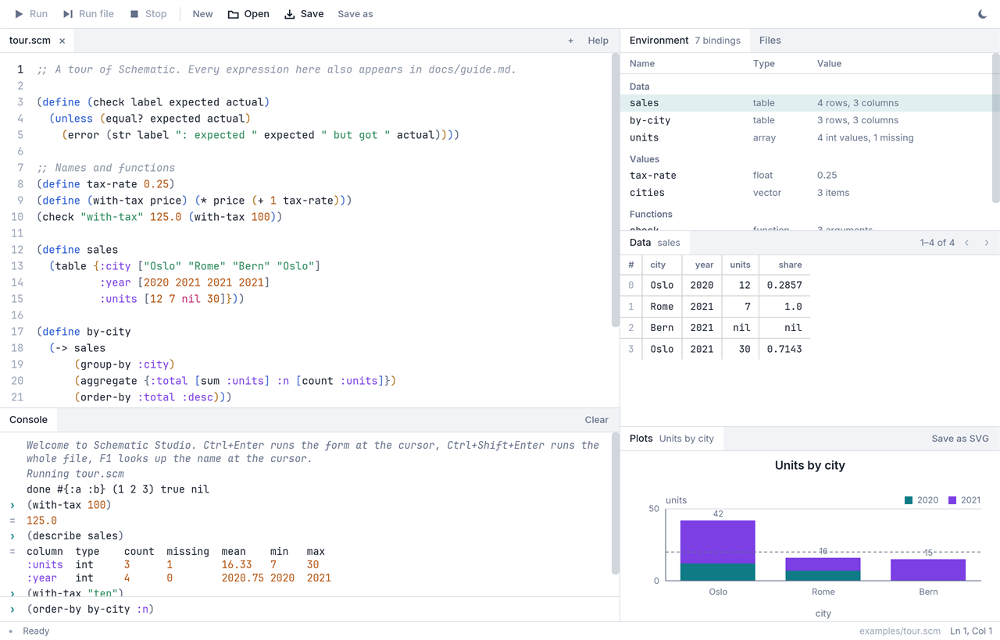

Schematic has Scheme's shape and Clojure's literals, with typed arrays, tables, dates, and charts built in. Write a few forms at the prompt, step through a script in Schematic Studio, and get answers you can read.
sales city total orders Oslo 42 2 Rome 7 1 Bern 0 1 (3 rows, 3 columns) city year units Oslo 2021 30 Oslo 2020 12 (2 rows, 3 columns)
This runs in your browser: the same interpreter, compiled to WebAssembly. Edit anything and press Run.
Arithmetic and comparisons broadcast over typed arrays, nil marks a missing value, and statistics skip it without being told.
select, where, group-by, aggregate, window, pivot, and join, with CSV in and out and column types inferred.
Dates have a literal and calendar math. format fills placeholders with precision, alignment, and thousands separators, and every string function works on a whole column.
Bar, line, scatter, and histogram charts print as text in the terminal, save as SVG, and draw in Studio. Group with :by, label with :title.
Proper tail calls, hygienic syntax-rules, destructuring and match, escape continuations, and try with finally, on a bytecode VM.
Errors name the function and the value it did not like, integers never overflow silently, and only nil and false count as false.
Every result below is what the interpreter prints. Press Try it on any of them to load it into the playground above.
An operation on an array applies to every element. Missing values stay missing, and masks select.
(define prices #[10 20 30 nil])
(* prices 1.25)
(mean prices)
(where prices (> prices 15))
(string-upcase #["oslo" nil "rome"])prices
#[12.5 25.0 37.5 nil]
20.0
#[20 30]
#["OSLO" nil "ROME"]Each table function takes a table and returns one, so questions compose left to right.
(define sales
(table {:city ["Oslo" "Rome" "Bern" "Oslo"]
:year [2020 2021 2021 2021]
:units [12 7 nil 30]}))
(order-by (where sales (> (:units sales) 10))
:units :desc)sales
city year units
Oslo 2021 30
Oslo 2020 12
(2 rows, 3 columns)A date is a value with its own literal. Subtract two to count days, truncate to a month, format with a pattern.
(define d #2024-03-15)
(date-format d "EEEE, d MMMM yyyy")
(date-trunc d :month)
(- #2024-04-01 d)
(date-range #2024-01-30 #2024-02-02)
(format "{} sold {:,} units ({:.1%})" "Oslo" 42000 0.256)d
"Friday, 15 March 2024"
#2024-03-01
17
#[#2024-01-30 #2024-01-31 #2024-02-01 #2024-02-02]
"Oslo sold 42,000 units (25.6%)"Vector and map patterns bind names in let, define, and parameter lists. match picks the first clause that fits.
(define (shape-name shape)
(match shape
([:circle r] (format "circle, radius {}" r))
([:rect w h] :when (= w h) (format "square of side {}" w))
([:rect w h] (format "{} by {} rectangle" w h))
(else "something else")))
(map shape-name [[:circle 2] [:rect 3 3] [:rect 2 5] 42])
(let (([first & more] [1 2 3])) [first more])shape-name
["circle, radius 2" "square of side 3" "2 by 5 rectangle" "something else"]
[1 [2 3]]A chart is a value. In the terminal it draws itself with text; in Studio it draws in the Plots pane; save-plot writes an SVG.
(histogram #[3 5 4 8 9 7 12 11 14 13] {:bins 4})
(bar-chart sales :city :units {:by :year :title "Units by city"})3–5.75 ████████████████████████████████████████ 3
5.75–8.5 ███████████████████████████ 2
8.5–11.25 ███████████████████████████ 2
11.25–14 ████████████████████████████████████████ 3
Units by city
Oslo 2020 ████████████████ 12
Oslo 2021 ████████████████████████████████████████ 30
Rome 2021 █████████ 7An editor, a console, an environment pane, a data grid, and plots, side by side in one window. It is built with Iced and ships as part of the repository.

git clone https://github.com/collide2954/schematic
cd schematic
cargo run --release -p schematic # the REPL
cargo run --release -p schematic-studio # StudioThe language crate has no dependencies at all. Studio adds Iced and a file-dialog crate. Schematic is early and moving quickly, so expect new functions often and the occasional renamed one.